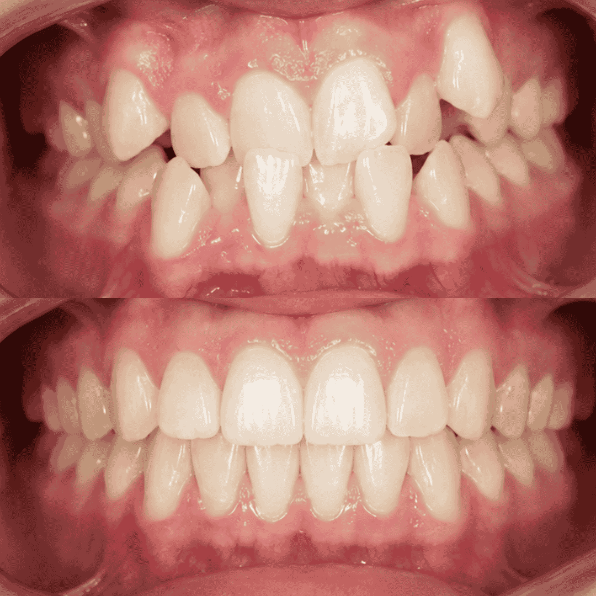
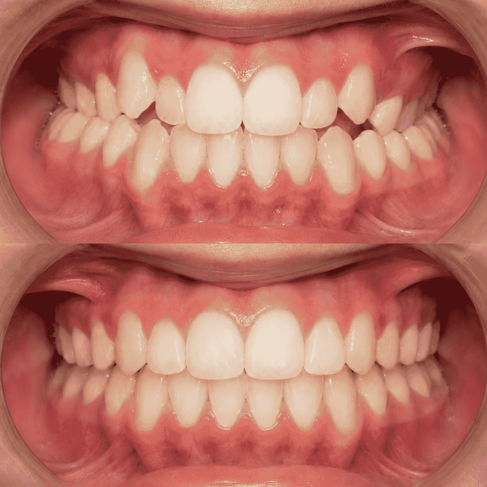
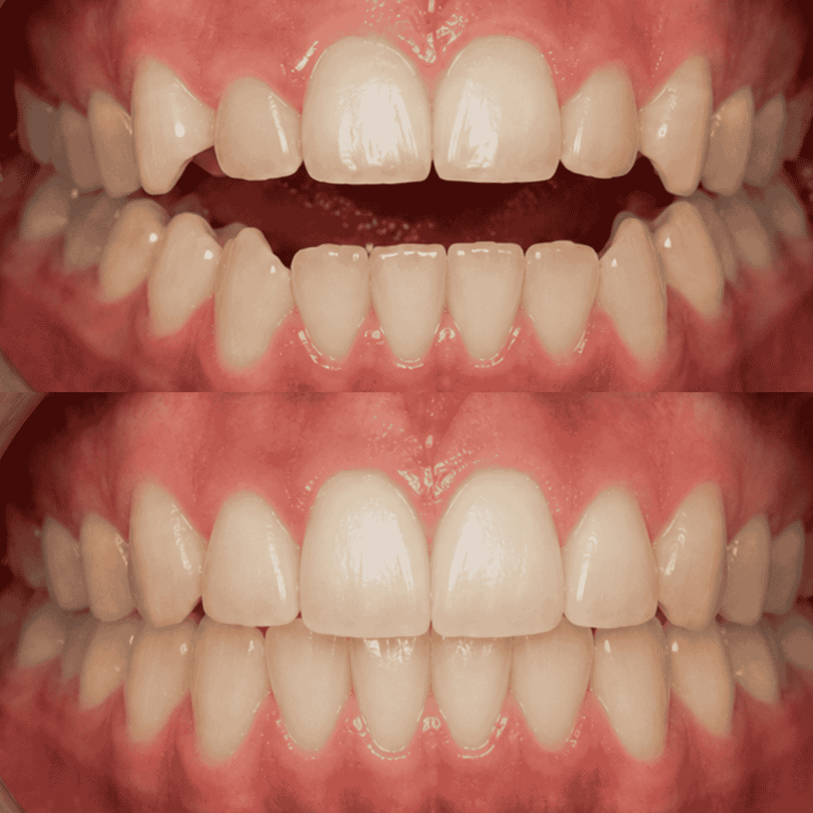

Corrige la posición de tus dientes con un plan de tratamiento personalizado. Brackets metálicos, estéticos o alineadores invisibles, según lo que mejor se adapte a tu caso y tu estilo de vida.
La ortodoncia es el tratamiento dental que corrige la posición de los dientes y la mordida. Mueve las piezas dentales gradualmente hasta una posición correcta, mejorando tanto la estética de tu sonrisa como la función masticatoria y la salud de tus encías a largo plazo.
En San Martin Dent, especialistas en ortodoncia en Temuco, tratamos casos de apiñamiento dental, espacios entre dientes (diastemas), mordidas cruzadas y mordidas abiertas. Ofrecemos brackets metálicos, brackets estéticos de cerámica o zafiro y alineadores invisibles, adaptando siempre la técnica al caso y las necesidades de cada paciente.
No existe una opción mejor para todos los casos — existe la opción correcta para el tuyo. En tu evaluación, nuestro ortodoncista te indicará cuál técnica logra el mejor resultado según tu caso clínico.
Cada tratamiento de ortodoncia sigue las mismas etapas clínicas, aunque el tiempo total varía según la complejidad de tu caso. Así se ve el proceso completo, desde la evaluación hasta el resultado final.
Radiografía panorámica, estudio de la mordida y análisis del espacio disponible. Sales de esta cita sabiendo exactamente qué técnica se ajusta a tu caso y cuánto tiempo tomará.
Se instalan los brackets o se entrega tu primer set de alineadores. La sesión es indolora; es normal sentir presión leve los primeros días.
Ajustes mensuales (brackets) o cambio de alineadores cada 1-2 semanas. El movimiento dental se acumula de forma gradual, control tras control.
Se retiran los brackets o finaliza el uso de alineadores. Se entregan retenedores para mantener el resultado logrado durante todo el tratamiento.
Estos son pacientes reales de Temuco y La Araucanía que corrigieron su sonrisa con ortodoncia en San Martin Dent. Cada caso es único, y el tiempo de tratamiento se ajusta a la complejidad de cada mordida.

'">Paciente de 34 años, profesional en Temuco. Corrigió apiñamiento anterior con brackets metálicos, con controles mensuales durante todo el tratamiento.

'">Paciente de 39 años que necesitaba discreción por su trabajo de cara al público. Optó por alineadores invisibles, con cambios cada 10 días.

'">Paciente de 50 años con mordida abierta anterior. Tratamiento con brackets estéticos de cerámica, casi imperceptibles durante todo el proceso.
La ortodoncia no tiene límite de edad. Es igual de efectiva en adultos que en jóvenes. En San Martin Dent atendemos frecuentemente pacientes adultos con brackets metálicos, estéticos y alineadores — según lo que mejor se adapte a cada caso y estilo de vida.
Depende de la complejidad del caso. La mayoría de los tratamientos en adultos toma entre 14 y 24 meses. Nuestro ortodoncista te dará un estimado claro en la primera evaluación, junto con la radiografía de estudio.
Los primeros días después de cada control o cambio de alineador puede haber una molestia leve mientras los dientes se ajustan a la nueva posición. No es dolor constante — la mayoría de los pacientes lo describe como una presión tolerable que desaparece en 2 o 3 días.
Sí. En San Martin Dent ofrecemos brackets estéticos de cerámica o zafiro, casi invisibles, y alineadores removibles para casos seleccionados. El ortodoncista evaluará cuál es la opción más efectiva para tu situación específica.
Con brackets: cepillado después de cada comida, uso de cepillo interproximal e hilo dental con pasador. Evita alimentos muy duros o pegajosos. Con alineadores: retíralos para comer, límpialos con su cepillo específico y úsalos entre 20 y 22 horas al día para no atrasar el tratamiento.
El resultado se mantiene siempre que uses el retenedor según las indicaciones — generalmente de noche por tiempo indefinido. Los dientes tienen memoria y tienden a volver a su posición original si se abandona el retenedor. Con uso correcto, la corrección dura toda la vida.
Conoce historias reales de pacientes que corrigieron su sonrisa con ortodoncia en Temuco.
Nuestro equipo de ortodoncia está listo para evaluar tu caso. Agenda tu consulta sin compromiso y te explicaremos con claridad el plan, los tiempos y las opciones disponibles para ti.
Agendar Consulta